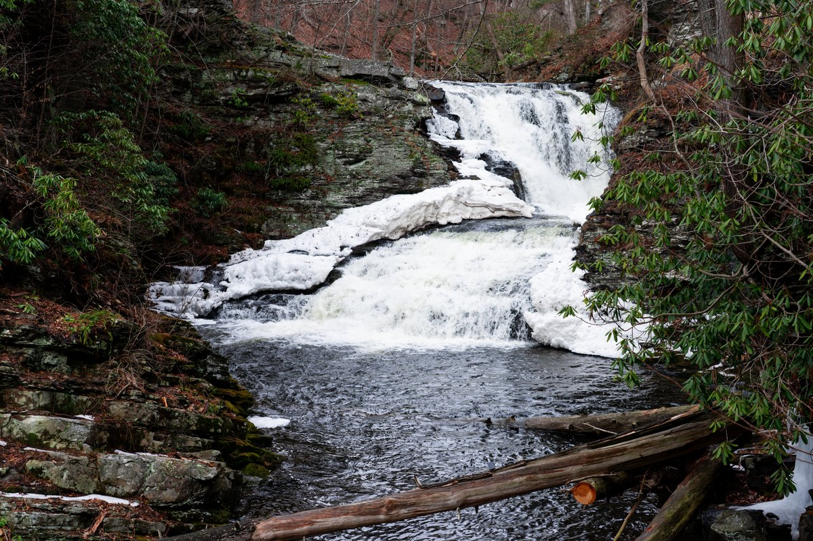

Natural creek terrain
The waterfall and creek are part of the setting, but the terrain is steep and natural. There is no maintained public path or staircase to the water.

Guest guide
A practical pre-arrival checklist for waterfall terrain, winter roads, burn rules, Saw Creek registration, pet approvals, and seasonal outdoor amenities.
Quick answer
Waterfall Wonder is a natural Poconos setting inside a community with seasonal, weather, and policy-dependent rules. Start here, then use WanderHome and official sources for booking, arrival, amenity, pet, road, fire, and outdoor conditions.
Before arrival
These are the details guests should understand before they lock in the trip.
The waterfall and creek are part of the setting, but the terrain is steep and natural. There is no maintained public path or staircase to the water.
Mountain weather can affect arrival, outdoor stairs, decks, road surfaces, parking, and activity plans. Check weather and manager guidance before travel.
Fire pit use depends on weather, local restrictions, burn bans, fuel availability, and house rules.
Community amenities, passes, registration, hours, fees, guest access, and seasons are controlled by Saw Creek policy.
Pools, beach access, outdoor dining, grilling, outdoor shower use, and similar features may depend on season, weather, service status, and rules.
Review occupancy, use, cover, glass, lotion, pet, and weather guidance before using the hot tub or surrounding outdoor areas.
Dogs are by approval. Confirm pet limits, fees, house rules, cleanup expectations, and restrictions before assuming a pet can join the stay.
WanderHome carries the booking calendar, stay policies, pet approval details, Saw Creek registration guidance, and house rules before you reserve.
Where to check details
Use WanderHome first for calendar, rental agreement timing, pet approval, arrival details, Saw Creek registration guidance, and house policies.
Use Saw Creek guidance for amenity access, registration, passes, hours, fees, rules, and seasonal availability.
Use weather, attraction pages, local restrictions, and official park or road alerts before choosing trails, fire pit use, or winter outings.
FAQ
Use WanderHome for booking policies, house rules, pet approval details, Saw Creek registration guidance, and arrival instructions.
Guests should treat the waterfall as a natural view and setting and follow the house guidance for steep terrain.
Yes. Fire pit use, burn restrictions, community amenities, pools, outdoor features, and seasonal access can change by weather, policy, and season.
Check road conditions, weather, manager guidance, outdoor stairs, parking, ski or attraction status, and whether plans need a rainy-day or indoor backup.
Before you book
Use the safety notes to ask better questions, then rely on booking, community, weather, and official sources.

Plan your stay
Verify dates, policies, rules, and availability directly with WanderHome.